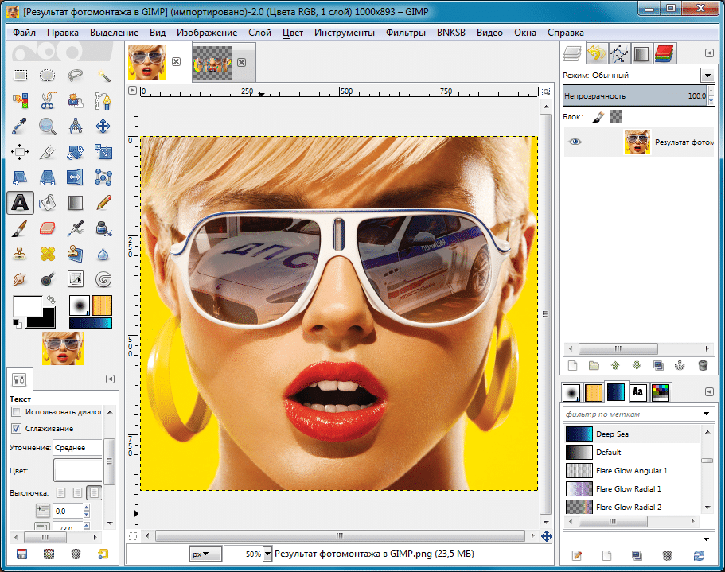

Программа Gimp, её главные особенности.
Gimp представляет собой очередной графический редактор. Вам известно множество подобных программ данной области. И все они по сути одинаковы, за исключением сложного Фотошопа. Также можно выделить и Gimp. Поскольку данная программа находится на несколько шагов впереди других графических редакторов, за исключением Фотошопа и Рав-редактора. 
Не смотря на то, что программа не является мега-сложной, у неё на чудо широкая функциональность. Ведь все знают, что истинно мощные редакторы — сложные. Программа Gimp скачать бесплатно на русском языке удастся легко потому как это функциональный и простой редактор. Она предлагает пользователю самые известные фокусы, что касаются фото. Среди которых игра со светом, различные эффекты, увеличения или уменьшения частей изображения, коррекция лица, цветные фильтры и многое другое. Вообще почти повторяет набор известного Фотошопа, но является более доступной и просто. Также стоит отметить возможность создания анимации и рисования. Удобный интерфейс и инструменты для создания портретов, чего нет даже в Фотошопе.
Достоинства и недостатки Gimp редактора.
Главным достоинством, конечно, является удобнейший и простой интерфейс на русском. Второе достоинство доступность программы, ибо скачать её можно абсолютно бесплатно. Третье — большой набор инструментов различных областей. Как для коррекции фото, так и рисования с нуля. Минусов у программы немного, но все же есть. Самые существенные — ограниченная функциональность печати и ограниченные возможности работы с текстом.
Скачать бесплатно GIMP на Русском
Gimp это почти аналог фотошопа только бесплатный для windows
как сделать не скачивая
какая классная была старая пограма . а теперь -гакно полное . типа изобрели колесо а теперь сделали квадратное колесо ….
klasss
если укогото не работает поменяйте версию виндувса
класс просто супер
Я очень люблю игру Мишка Фредди
Яя тоже люблю но боюсь
я тоже
отлично
У мен не получается, не скачивает мы, говорит файл невозможно открыть . ПОДСКАЖИТЕ , ПООООЖАЛУЙСТА , ЧТО ДЕЛАТЬ, ПРООООШУ ПРОООШУУУ!!!!
По идее должен открыть. у вас предупреждение какое то выскакивает?
Все супер, всегда искал навороченную прогу для фоторедактирования, а оказалось лишнего и не надо тут есть все))
16 лет
Это хорошо, удачи в освоении и работе с программой!
Сонун
Нормальный фото редактор но не хватает маленькой изюменьки.
Хороший редактор для Linux платформ. Поддерживает многослойность, быстрый движок, может работать на маломощных компьютерах и тонких ноутах. хорошая оптимизация кода. Рекомендую для любых задач, кроме полиграфии.
У меня старый компьютер и с более мощными графическими редакторами постоянно висит. Поэтому поставил себе gimp, теперь и работает без зависанья и нет лишних функций, которые я не применял.
Когда то пытался соединить две фотки в другой проге разобрался в итоге, но сколько нервов потратил. А тут запустил Gimp и сразу стало получаться, даже пару уроков скачал, так понравилось.
Пару раз ретушировала фотки для свадебных книг, компоновала развороты, все инструменты под рукой, со слоями хорошо организована работа, так что кисти для gimp в помощь любителям работать с фото.
Использую этот редактор для работы с картами. В основном дорисовываю в нем свои области и добавляю текстовые слои. Все кисти от предыдущей программы прекрасно загрузились в Gimp.
То что в Gimpe нет всех наворотов, которые есть в самом фотошопе это не минус, это плюс. Реализованы именно самые востребованые функции фотошопа. Прост в использовании и бесплатен.
В отличие от других графических редакторов, кисти для gimp имеет достаточно простой и красиво оформленный интерфейс, при этом он обладает почти той же функциональностью. Мне с ним очень легко работать.
Недавно пришлось столкнуться с проблемой редактирования изображения. Стандартным редактором ничего сделать не мог. Вернее, получалось не то, что мне нужно. Попробовал этим, все получилось.
Давно пользуюсь этим редактором. Ничего плохого сказать не могу, редактор вполне может справляться с задачами средней сложности. До фотошопа ему, конечно, далеко, но и полгода учиться с ним обращаться не нужно.
Gimp представляет из себя многофункциональный графический редактор растровой графики, оставаясь в то же время максимально простым в использовании и освоить его может любой новичок за относительно небольшое количество времени.
Ну, без эмоций. Неплохой редактор, довольно широкий спектр возможностей, но до ФШ ему далеко. Конечно, для человека, которому нужно чуть чуть подкорректировать фото это самое то, но для более серьезной работы я бы его не использовал.
Когда-то работала в фотошопе, поэтому когда села за gimp инструменты принципы работы все знала. Можно открывать одновременно много файлов и комп не виснет, есть история для откатов, часто записываю сценарии
Меня устраивает в этой программе то что запросто можно отредактировать цветовую гамму на фотографии. Здесь даже со слоями можно поэкспериментировать. Удобное расположение инструментов не загромождает рабочее пространство.
А мне нравится в GIMP что легко можно совмещать несколько фотографий. Например вырезать объект и вставлять его в новую картину. Просто хорошо продуман буфер обмена . Для создания коллажей это очень ценное свойство.
Когда пошла волна борьбы с не лицензированным ПО у нас на работе был установлен. Все новое всегда пугает, но разобравшись освоили — редактируем карты, дорисовываем зоны, добавляем текст шрифты для gimp.
Нет лишних наворотов платного фотошопа, которые мне не особо и нужны, зато есть много возможностей для выделения областей и работы с каналами, разными слоями, наложением масок.
Давно работаю в GIMP, редактирую фотографии. Для меня настройки гораздо проще чем в фотошопе.Да, у программы свои тонкости, но достоинств не меньше. Приятно работать в этом редакторе.
Работа со слоями сделать прозрачный фон, быстрая маска, цветокоррекция организованы по принципам хорошо знакомого фотошопа, даже hot key теже. Поэтому переход с одного продукта на другой для меня был не затруднителен.
Хорошая программа. Вообще, я не профессионал. Редактирую фото сделать прозрачный фон только если родные попросят, или если самому захочется глаза обрадовать. Но вместо Adobe Photoshop я отдаю предпочтение именно этой программе.
Пользуюсь Gimp и дома и на работе, нет лишних и многочисленных фильтров как в фотошопе, меню понятное. Комп от Gimpa не вешается как фотошопа и нет проблем лицензированием — одни плюсы
Для бесплатного ПО Gimp сделать прозрачный фон очень мощная программа, которая вполне может заменить рабочее место фотошопа, можно настроить хоткеи под фотошоп это еще и ускорит процесс редактирования файлов.
Быстро ставится, руссифицирован, никаких проблем с лицензированием, занимает минимум места на жестком диске. Все кисти *.abr подгружаются без проблем. И открывает мои старые *.psd файлы.
Растровый графический редактор gimp постоянно развивается, выходят новые стабильные версии, появляются очень полезные плагины для работы. Гимп становится все популярнее среди моих знакомых.
Я пользуюсь не фотошопом, а именно программой GIMP. Она занимает мало места на жёстком диске, но при этом имеет массу функций. Больше всего меня выручает возможность работы со слоями и интеллектуальное искажение изображение. Также присутствуют интересные фильтры.
Ни раз прибегал к гимпу для создания баннеров. Очень выручает встроенный фильтр гимпа «анимация», значительно уменьшает размер гифки без какого- либо ущерба качеству картинки.
Подсела на программу после запрета на не лицензионное ПО на работе, нравится возможность связки слоев так как постоянно с ними работаю. Текст выделяется в один клик не надо растрировать как в фш
Ну я думаю излишне нахваливать и без меня нахваленого редактора. Как на меня, то в Gimp одни плюсы. Я делала в нем фотку, с выделенным одним элементом и размытым фоном. Получилось классно и быстро. Пользуюсь и буду всем советовать
Сначала программа напугала немного своей многооконностью, но этот режим можно переключить, если покапаться. Огромный плюс то, что спокойно открывает файлы фотошопа с расширением *.psd.
Нравится в гимпе, что окно можно развернуть на весь экран, не надо в маленьком окошке среди панелек и палитр мучаться — постоянно зумировать, просто выбираю нужный инструмент и разворачиваю рабочую область
В плане удобства после работы в фотощопе первое время очень не нравилась палитра кистей, она немного специфическая. Но стоит поработать и уже оказывается такой интерфейс даже проще
Хорошая программа, если разобраться. Я скачала эту и фотошоп, пользуюсь обеими по случаю. В этой программе удобно снимки редактировать и корректировать, интерфейс запутаннее, но умнее чем в фотошопе — но это субъективное мнение.
Через эту программу можно проявить свои художественные таланты, а также отточить компьютерные навыки, приемы работы с изображениями растрового типа. Для новичков этого дела советую.
Я также отмечу простоту проги. Я работала со всеми возможными редакторами, и именно этот посоветую тем, кто только начинает работать с графическими редакторами. Это отличная программа для того, чтобы начать свое знакомство с миром графического дизайна фото и тд.
Пользуюсь программой уже давно. Она намного проще фотошопа. Здесь очень простой и понятный интерфейс. Вполне достаточно этой программы для простой обработки фотографий. Заказчики, для которых я делаю снимки остаются всегда довольными!
Самый большой плюс — программа бесплатная и не требует лицензирования, а у нас с этим строго. Поэтому сейчас используем на работе. Немного другой интерфейс, но ничего, можно привыкнуть, пришлось дома тоже установить.
Вообще я нормально разбираюсь в редакторах, но мой ноутбук слабоват, нужно что-то легкое, и чтобы с хорошим функционалом. Пока остановилась я и убедилась что GIMP это программа с приятным и понятным интерфейсом, и его возможностей вполне хватает для основных задач. Довольна, рекомендую, особенно новичкам в компьютерной графике.
Обожаю интерфейс данной программы. Вот если бы все графические редакторы такой имели бы. Также нравится наличие множества инструментов для редактирования изображений и скорость работы.
Для любителей редактировать фото отличная программа GIMP, было не сложно перейти на нее с фотошопа иконки похожи все, единственное, что много окон изначально у гимпа было, напрягало сначало.
До недавнего времени пользовался платными услугами знакомых для редактирования фотографий. И мне посоветовали самому попробовать редактировать с помощью программы. Поначалу не мог разобраться что да как. Но быстро научился. И теперь не трачу деньги зря.
На мой взгляд прога самый простой графический редактор. К тому же и бесплатный. Интерфейс понятный, работает на русском языке. Для новичков в интернете очень много видео-уроков.
Поскольку я линуксоид со стажем, то знаком с Gimp уже очень давно. Виндоус-версию я не пробовал, но думаю, отличия там разве что во внешнем виде. Как по мне, то этот фоторедактор ничем не уступает Фотошопу и я обычно рекомендую его всем своим знакомым.